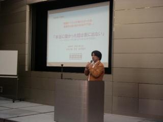
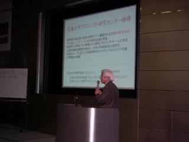
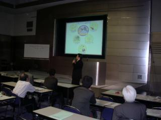

|
|
|
|
第７回広島エンジェルズ・フォーラム
2004年 2月21日
「第７回広島エンジェルズ・フォーラム」
〜産学連携による大学発ベンチャーの創出に期待！〜
大学の研究によって蓄えられたシーズと、市場のニーズを
つかんでいる企業とのマッチング(産学連携)がこれからの
地域経済には不可欠！！
|
|  |
第１部 基調講演
『本当に儲かった話は表に出ない』
〜シーズをニーズに変えビジネスにする方法〜
講師 山口 俊介 氏
|
第２部 プレゼンテーション
【広島大学ﾊｲﾊﾟｰﾋｭｰﾏﾝﾃｸﾉﾛｼﾞｰﾌﾟﾛｼﾞｪｸﾄ研究ｾﾝﾀｰ】
I. 金子 真 教授 （ 講座：ロボティクス ）
タイトル： 『非接触インピーダンスセンシングとその応用』
概 要： 硬さ、粘性、慣性を総称して一般にインピーダンスと言う。対象物のインピーダンスを計測する場合、一般に対象物に直接強制力を加えてそのときの時間応答から推定される。ここでは空気噴流によって等価的に力を印加する非接触インピーダンスセンシング法、及び医療、食品、福祉応用の可能性について。
II. 辻 敏夫 教授 （ 講座：生体システム論 ）
タイトル： 『生体信号処理技術とその医療福祉工学への応用』
概 要： 人間の身体からは、意識的、無意識的にかかわらず、さまざまな信号（生体信号と呼ぶ）が常時発信されている。この生体信号を正確に計測、解析、識別することができれば、意思や感情、健康状態といった内面に隠された情報を解読できる可能性がある。本発表では広島大学生体システム論研究室で開発中の生体信号処理技術を紹介するとともに、その技術を医療福祉工学に応用した例をいくつか紹介。
|
 |
|  |
III. 石井 抱 助教授 （ 講座：サイバネティックス ）
タイトル： 『超高速・メガピクセルビジョンとその応用』
概 要： 従来のビジョンに比べ、数十倍高速化(1000fps以上)された高速実時間ビジョンの実用化開
発について紹介する。また、高速ビジョンの実現によるロボティクス、ＦＡ、ヒューマンインターフェイス、ＶＲなど多岐にわたる応用分野に対する波及効果について様々なデモシステムのビデオ紹介を通じて。
IV. 金田 和文 助教授 （ 講座：知的システムモデリング ）
タイトル： 『2次元画像の3次元表示技術』
概 要： ２次元画像からコンピュータグラフィックスを用いて３次元表示を行う手法を紹介する。この手法を応用すれば医療用の試料切片やＣＴ、ＭＲＩ等から得られた２次元断層画像から３次元形状を再構築し、内部構造も含めた３次元表示を行うことが可能となる。内部の幾何学的形状を詳細に観察するための境界面の半透明表示と、内部の空間すべてにわたって観察を行うためのボリュームレンダリング表示の、２種類の表示法について具体例を用いて紹介。
|
|
|
| © 2001 Business Support Communication Link. All rights reserved |